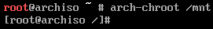

Instalar el sistema
En este punto es necesario montar las particiones en carpetas para que el script de instalación pueda acceder a ellas. Es necesario montar tres particiones:
mount /dev/vg0/system /mnt
mkdir /mnt/home
mount /dev/vg0/home /mnt/home
mkdir /mnt/boot
mount /dev/sda2 /mnt/boot
La instalación de Arch Linux, firmwares necesarios y el kernel de Linux se realiza mediante pacstrap. En este punto es necesario decidir qué kernel se instalará:
linux: última versión estable.linux-hardened: orientado a seguridad, incluye parches adicionales para evitar exploits.linux-lts: última versión LTS.linux-zen: última versión estable con parámetros de configuración reajustados para lograr un mayor rendimiento del kernel a cambio de un mayor consumo de potencia.
pacstrap /mnt base linux-zen linux-firmware sudo nano
El proceso de instalación es idéntico sin importar qué tipo de kernel se instale, con la salvedad del paquete
virtualbox.
Una vez el proceso haya finalizado, es necesario persistir en el fichero /etc/fstab la información de las particiones que han de montarse automáticamente cuando arranque el sistema. El comando empleado usará las que haya montadas en ese momento:
genfstab -U /mnt >> /mnt/etc/fstab
El comando more permite mostrar el contenido del fichero recién creado. En este caso debería mostrar cuatro particiones: Arranque, Swap y las dos del Sistema (/home y /).

Para completar la configuración del sistema base, es necesario ejecutar el comando arch-chroot /mnt para poder acceder libremente a los archivos de instalación y modificarlos. El prompt del terminal cambiará a partir de ahora:

El comando arch-chroot crea un chroot-jail, es decir, a partir de este momento no va a ser posible acceder a archivos fuera de la ruta absoluta
/mnt, que es donde se han montado las particiones. Además, los comandos ejecutados creerán estar en la ruta/. Se trata de una práctica habitual cuando se realizan tareas de críticas en un sistema, como actualizarlo, recuperar contraseñas o repararlo.